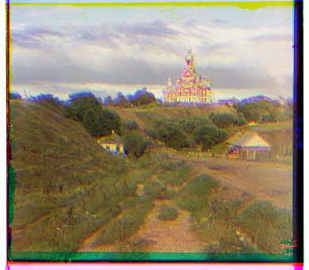
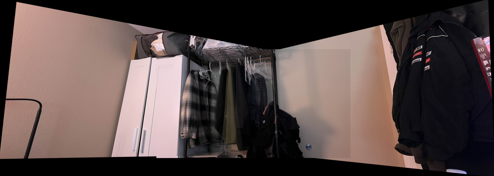
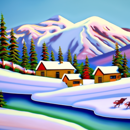
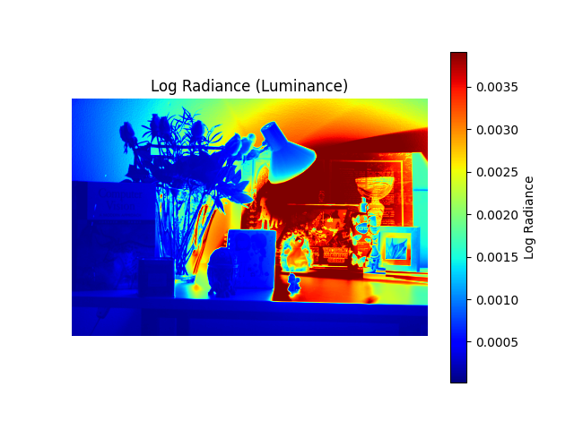

My Projects

Project #1
Colorizing the Prokudin-Gorskii Photo Collection

Project #2
Fun with Filters and Frequencies
Project #3
Face Morphing

Project #4
Stitching Photo Mosaics (Panoramas)

Project #5
Diffusion Models

Final Project (pt.1)
HDR Images

Final Project (pt.2)
Light Field Camera